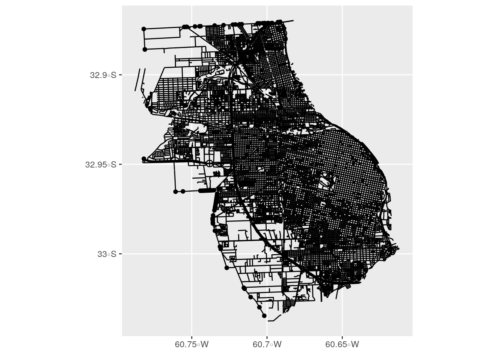
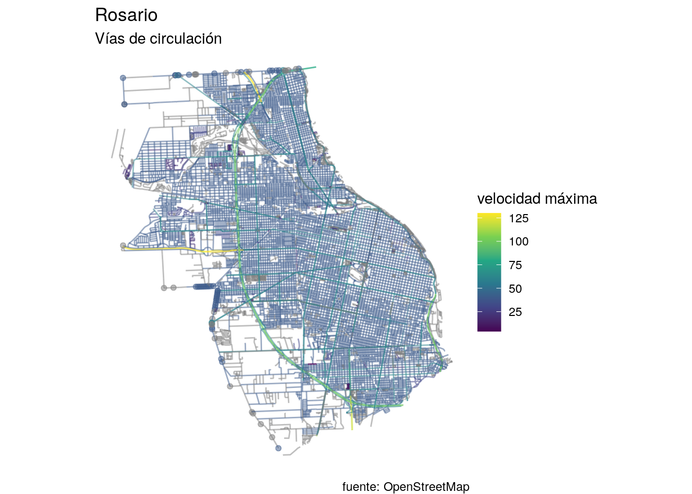
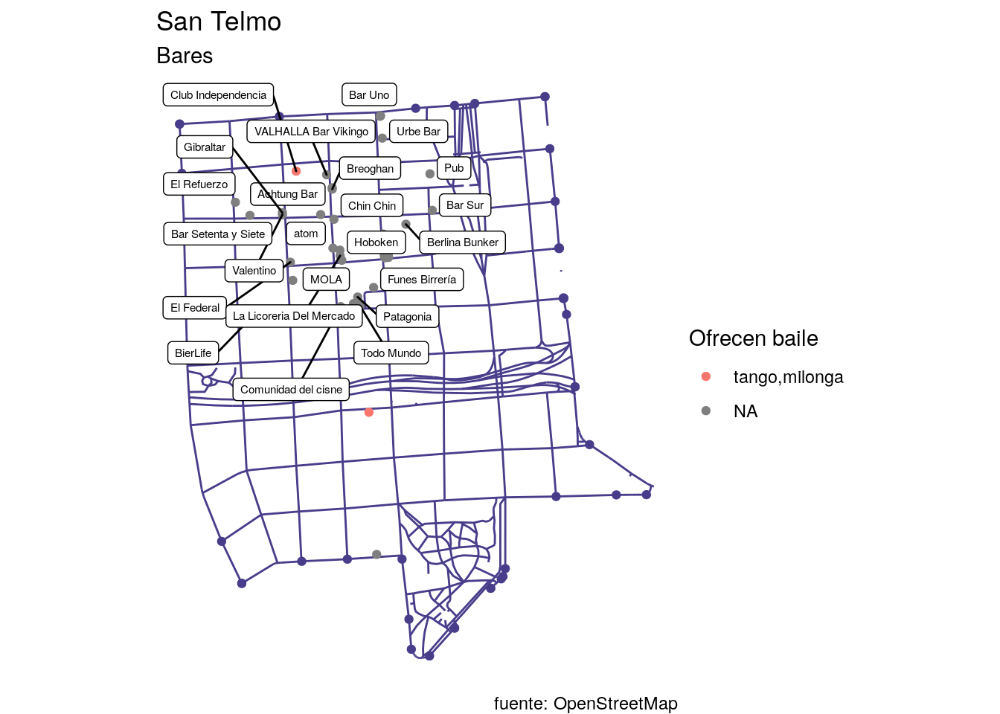

Capítulo 3 Acceso a información urbana georeferenciada en repositorios online
OpenStreetMap es un servicio de mapas online que publica información contribuida en forma libre por más de un millón de voluntarios, que benefician a los 5,5 millones de usuarios de la plataforma.
Los contribuidores más entusiastas mapean barrios completos utilizando herramientas GPS para enviar información local completa, actualizada y precisa a OpenStreetMap. Varias empresas y entidades públicas que producen información geográfica también contribuyen al permitir que sus datos sean incluidos. Existen equipos profesionales de contribuidores que que se coordinan para agregar y mantener actualizada información georeferenciada de límites políticos, calles, edificios, negocios y otros puntos de interés; en ocasiones empleados por compañías que dependen de OpenStreetMap para el “mapa base” de sus productos, como mapbox.com y carto.com.
Toda la información disponible en OpenStreetMap puede ser descargada y reutilizada por cualquier persona, ya sea accediendo al mapa online, obteniendo una copia completa de la base de datos, o accediendo a los datos vía API.
3.1 OpenStreetMap desde R
Utilizaremos osmdata, un paquete de R que permite acceder a los datos de OpenStreetMap (OSM de aquí en más) con sus atributos, geometría y posición.

Como siempre, si no tenemos aún el paquete lo instalamos:
También vamos a hacer uso del paquete leaflet, que nos va a permitir generar de forma muy rápida mapas interactivos.
Y los activamos junto a otros paquetes que vamos a utilizar:
library(osmdata)
library(leaflet)
library(tidyverse) # nuestra navaja suiza para manipulación y visualización de datos
library(sf) # para procesar info espacial3.1.1 Definiendo el lugar
Antes de descargar información, definimos el lugar que queremos consultar. Éste puede ser un barrio, un municipio, un país, un continente… en este caso, lo intentaremos con la ciudad de Rosario.
Las funciones de osmdata nos permiten realizar consultas a Overpass (http://overpass-api.de/), una interfaz que permite extraer información de la base de datos global de OpenStreetMap. Overpass requiere que se especifique una “bounding box”, es decir las coordenadas de un rectángulo que abarque la zona de interés.
Podemos obtener la bounding box de cualquier lugar con la función getbb():
## min max
## x -60.78326 -60.61167
## y -33.03487 -32.86965Con getbb() también podemos obtener un polígono con los límites políticos, las fronteras exactas, de un lugar. Esto es muy útil para realizar mapas, o para filtrar la información que obtendremos luego para quedarnos sólo con la que corresponda a nuestra ciudad de interés, descartando la de áreas aledañas:
Para asegurarnos de que tenemos el lugar que queremos, y no otro de nombre similar en alguna otra parte del mundo, lo verificamos en un mapa rápido provisto vía leaflet:
Luce bien, así que continuamos.
3.1.2 Extrayendo información de OpenStreetMap
El siguiente paso es utilizar la función add_osm_feature() para especificar los datos que queremos descargar. Esto requiere conocer las palabras clave con las que se identifican los registras en la base de OSM, que permiten indicar con gran detalle el tipo de datos georeferenciados que queremos: ya sean áreas de parques públicos, posición de oficinas de correo o cajeros automáticos, vías de ferrocarril… u otro, en un larguísimo etcétera que se puede consultar en https://wiki.openstreetmap.org/wiki/Map_Features
En este caso vamos a solicitar todas las vías de circulación (calles, avenidas, autopistas, etc) de la ciudad. En la base de datos de OSM todas aparecen con la clave “highway”.
Observemos que lo único que hemos obtenido hasta ahora es la definición de una consulta (qué y en dónde), pero aun no descargamos ningún dato:
## $bbox
## [1] "-33.0348662,-60.7832623,-32.8696532,-60.6116695"
##
## $prefix
## [1] "[out:xml][timeout:25];\n(\n"
##
## $suffix
## [1] ");\n(._;>;);\nout body;"
##
## $features
## [1] " [\"highway\"]"
##
## attr(,"class")
## [1] "list" "overpass_query"Es sólo la definición de una consulta a la base de datos de OpenStreetMap: “Todas las calles (objetos con clave”highway“) dentro de éste rectángulo (que sabemos, corresponde a Rosario)”. Para hacer efectiva la consulta y descargar los datos, la pasamos por la función osmdata_sf() que recolecta lo que buscamos y lo entrega en forma de dataset espacial:
La descarga de información para una ciudad grande puede tomar varios minutos, y más aún la de un área metropolitana (o país, o continente, etc) así que es normal esperar un poco en ésta parte.
En cuanto se completa, ya tenemos calles:
La consulta devolvió toda la información de puntos, líneas y polígonos disponibles en la base de OSM. A nos otros nos interesan las líneas, “osm_lines”, que demarcan la traza de las calles. Los registros con otras geometrías, como polígonos, pueden representar elementos asociados a las calles como bulevares o áreas de vereda que no vamos a usar por el momento.
Del conjunto de datos disponibles, extraemos el dataframe con líneas, y chequeamos los atributos disponibles. Todos han sido recopilados por la comunidad de OpenStreetMap.
calles <- rosario$osm_lines
# mostramos sólo las primeras 10 columnas... porque tiene montones!
head(calles[1:10,]) ## Simple feature collection with 6 features and 283 fields
## geometry type: LINESTRING
## dimension: XY
## bbox: xmin: -60.71891 ymin: -33.01829 xmax: -60.65706 ymax: -32.86627
## epsg (SRID): 4326
## proj4string: +proj=longlat +datum=WGS84 +no_defs
## osm_id name abandoned.highway
## 10585611 10585611 Autopista Juan José Valle <NA>
## 23633084 23633084 Avenida de Circunvalación 25 de Mayo <NA>
## 23633086 23633086 Puente Nuestra Señora del Rosario <NA>
## 23633100 23633100 Avenida de Circunvalación 25 de Mayo <NA>
## 23633101 23633101 Avenida de Circunvalación 25 de Mayo <NA>
## 23644546 23644546 Avenida de Circunvalación 25 de Mayo <NA>
## abandoned.railway.left abandoned.surface abutters access access.lanes
## 10585611 <NA> <NA> <NA> <NA> <NA>
## 23633084 <NA> <NA> <NA> <NA> <NA>
## 23633086 <NA> <NA> <NA> <NA> <NA>
## 23633100 <NA> <NA> <NA> <NA> <NA>
## 23633101 <NA> <NA> <NA> <NA> <NA>
## 23644546 <NA> <NA> <NA> <NA> <NA>
## addr.city addr.housenumber addr.postcode addr.street agricultural
## 10585611 <NA> <NA> <NA> <NA> <NA>
## 23633084 <NA> <NA> <NA> <NA> <NA>
## 23633086 <NA> <NA> <NA> <NA> <NA>
## 23633100 <NA> <NA> <NA> <NA> <NA>
## 23633101 <NA> <NA> <NA> <NA> <NA>
## 23644546 <NA> <NA> <NA> <NA> <NA>
## alt_name amenity arcade.left arcade.right area
## 10585611 Ruta Nacional 9 <NA> <NA> <NA> <NA>
## 23633084 Doctor Constantino Razzetti <NA> <NA> <NA> <NA>
## 23633086 <NA> <NA> <NA> <NA> <NA>
## 23633100 Doctor Constantino Razzetti <NA> <NA> <NA> <NA>
## 23633101 Doctor Constantino Razzetti <NA> <NA> <NA> <NA>
## 23644546 Doctor Constantino Razzetti <NA> <NA> <NA> <NA>
## barrier bench bicycle bicycle.lanes bicycle.oneway bicycle_road bin
## 10585611 <NA> <NA> <NA> <NA> <NA> <NA> <NA>
## 23633084 <NA> <NA> <NA> <NA> <NA> <NA> <NA>
## 23633086 <NA> <NA> <NA> <NA> <NA> <NA> <NA>
## 23633100 <NA> <NA> <NA> <NA> <NA> <NA> <NA>
## 23633101 <NA> <NA> <NA> <NA> <NA> <NA> <NA>
## 23644546 <NA> <NA> <NA> <NA> <NA> <NA> <NA>
## bridge bridge.name bridge.structure bridge.support building bus
## 10585611 <NA> <NA> <NA> <NA> <NA> <NA>
## 23633084 <NA> <NA> <NA> <NA> <NA> <NA>
## 23633086 cantilever <NA> beam pylon <NA> <NA>
## 23633100 yes <NA> <NA> <NA> <NA> <NA>
## 23633101 <NA> <NA> <NA> <NA> <NA> <NA>
## 23644546 viaduct <NA> <NA> <NA> <NA> <NA>
## bus.lanes bus_bay busway.left busway.right change.backward
## 10585611 <NA> <NA> <NA> <NA> <NA>
## 23633084 <NA> <NA> <NA> <NA> <NA>
## 23633086 <NA> <NA> <NA> <NA> <NA>
## 23633100 <NA> <NA> <NA> <NA> <NA>
## 23633101 <NA> <NA> <NA> <NA> <NA>
## 23644546 <NA> <NA> <NA> <NA> <NA>
## change.forward change.lanes change.lanes.backward change.lanes.forward
## 10585611 <NA> <NA> <NA> <NA>
## 23633084 <NA> <NA> <NA> <NA>
## 23633086 <NA> <NA> <NA> <NA>
## 23633100 <NA> <NA> <NA> <NA>
## 23633101 <NA> <NA> <NA> <NA>
## 23644546 <NA> <NA> <NA> <NA>
## check_date construction construction.highway construction.lanes
## 10585611 <NA> <NA> <NA> <NA>
## 23633084 <NA> <NA> <NA> <NA>
## 23633086 <NA> <NA> <NA> <NA>
## 23633100 <NA> <NA> <NA> <NA>
## 23633101 <NA> <NA> <NA> <NA>
## 23644546 <NA> <NA> <NA> <NA>
## construction.maxspeed construction.name construction.oneway
## 10585611 <NA> <NA> <NA>
## 23633084 <NA> <NA> <NA>
## 23633086 <NA> <NA> <NA>
## 23633100 <NA> <NA> <NA>
## 23633101 <NA> <NA> <NA>
## 23644546 <NA> <NA> <NA>
## construction.surface contact.website conveying covered crossing
## 10585611 <NA> <NA> <NA> <NA> <NA>
## 23633084 <NA> <NA> <NA> <NA> <NA>
## 23633086 <NA> <NA> <NA> <NA> <NA>
## 23633100 <NA> <NA> <NA> <NA> <NA>
## 23633101 <NA> <NA> <NA> <NA> <NA>
## 23644546 <NA> <NA> <NA> <NA> <NA>
## crossing_ref cutting cycleway cycleway.left cycleway.left.oneway
## 10585611 <NA> <NA> <NA> <NA> <NA>
## 23633084 <NA> <NA> <NA> <NA> <NA>
## 23633086 <NA> <NA> <NA> <NA> <NA>
## 23633100 <NA> <NA> <NA> <NA> <NA>
## 23633101 <NA> <NA> <NA> <NA> <NA>
## 23644546 <NA> <NA> <NA> <NA> <NA>
## cycleway.left.surface cycleway.right description description.cycleway
## 10585611 <NA> <NA> <NA> <NA>
## 23633084 <NA> <NA> <NA> <NA>
## 23633086 <NA> <NA> <NA> <NA>
## 23633100 <NA> <NA> <NA> <NA>
## 23633101 <NA> <NA> <NA> <NA>
## 23644546 <NA> <NA> <NA> <NA>
## designation destination destination.backward destination.forward
## 10585611 <NA> <NA> <NA> <NA>
## 23633084 <NA> <NA> <NA> <NA>
## 23633086 <NA> Victoria RN174 <NA> <NA>
## 23633100 <NA> <NA> <NA> <NA>
## 23633101 <NA> <NA> <NA> <NA>
## 23644546 <NA> <NA> <NA> <NA>
## destination.lanes destination.ref destination.ref.forward
## 10585611 <NA> <NA> <NA>
## 23633084 <NA> <NA> <NA>
## 23633086 <NA> <NA> <NA>
## 23633100 Victoria|Victoria|Rosario <NA> <NA>
## 23633101 Victoria|Victoria|Rosario <NA> <NA>
## 23644546 <NA> <NA> <NA>
## destination.ref.lanes destination.street
## 10585611 <NA> <NA>
## 23633084 <NA> <NA>
## 23633086 <NA> <NA>
## 23633100 RN174|RN174|RN11 <NA>
## 23633101 RN174|RN174|RN11 <NA>
## 23644546 <NA> <NA>
## destination.street.lanes
## 10585611 <NA>
## 23633084 <NA>
## 23633086 <NA>
## 23633100 <NA>
## 23633101 Puente Rosario - Victoria|Puente Rosario - Victoria|Bulevar General José Rondeau
## 23644546 <NA>
## destination.symbol destination.symbol.forward destination.symbol.lanes
## 10585611 <NA> <NA> <NA>
## 23633084 <NA> <NA> <NA>
## 23633086 <NA> <NA> <NA>
## 23633100 <NA> <NA> bridge|bridge|centre
## 23633101 <NA> <NA> bridge|bridge|centre
## 23644546 <NA> <NA> <NA>
## destination.to distance disused disused.highway disused.maxspeed
## 10585611 <NA> <NA> <NA> <NA> <NA>
## 23633084 <NA> <NA> <NA> <NA> <NA>
## 23633086 <NA> <NA> <NA> <NA> <NA>
## 23633100 <NA> <NA> <NA> <NA> <NA>
## 23633101 <NA> <NA> <NA> <NA> <NA>
## 23644546 <NA> <NA> <NA> <NA> <NA>
## disused.turn.lanes.backward drinking_water embankment embedded_rails
## 10585611 <NA> <NA> <NA> <NA>
## 23633084 <NA> <NA> yes <NA>
## 23633086 <NA> <NA> <NA> <NA>
## 23633100 <NA> <NA> <NA> <NA>
## 23633101 <NA> <NA> <NA> <NA>
## 23644546 <NA> <NA> <NA> <NA>
## emergency emergency.lanes fence_type fixme flood_prone floor.material
## 10585611 <NA> <NA> <NA> <NA> <NA> <NA>
## 23633084 <NA> <NA> <NA> <NA> <NA> <NA>
## 23633086 <NA> <NA> <NA> <NA> <NA> <NA>
## 23633100 <NA> <NA> <NA> <NA> <NA> <NA>
## 23633101 <NA> <NA> <NA> <NA> <NA> <NA>
## 23644546 <NA> <NA> <NA> <NA> <NA> <NA>
## foot foot.lanes footway golf golf_cart goods handrail handrail.center
## 10585611 <NA> <NA> <NA> <NA> <NA> <NA> <NA> <NA>
## 23633084 <NA> <NA> <NA> <NA> <NA> <NA> <NA> <NA>
## 23633086 <NA> <NA> <NA> <NA> <NA> <NA> <NA> <NA>
## 23633100 <NA> <NA> <NA> <NA> <NA> <NA> <NA> <NA>
## 23633101 <NA> <NA> <NA> <NA> <NA> <NA> <NA> <NA>
## 23644546 <NA> <NA> <NA> <NA> <NA> <NA> <NA> <NA>
## handrail.left handrail.right hazard height hgv highway historic
## 10585611 <NA> <NA> <NA> <NA> <NA> motorway <NA>
## 23633084 <NA> <NA> <NA> <NA> <NA> motorway <NA>
## 23633086 <NA> <NA> <NA> <NA> <NA> motorway <NA>
## 23633100 <NA> <NA> <NA> <NA> <NA> motorway <NA>
## 23633101 <NA> <NA> <NA> <NA> <NA> motorway <NA>
## 23644546 <NA> <NA> <NA> <NA> <NA> motorway <NA>
## horse hov incline indoor indoor.highway int_name internet_access
## 10585611 <NA> <NA> <NA> <NA> <NA> <NA> <NA>
## 23633084 <NA> <NA> <NA> <NA> <NA> <NA> <NA>
## 23633086 <NA> <NA> <NA> <NA> <NA> <NA> <NA>
## 23633100 <NA> <NA> <NA> <NA> <NA> <NA> <NA>
## 23633101 <NA> <NA> <NA> <NA> <NA> <NA> <NA>
## 23644546 <NA> <NA> <NA> <NA> <NA> <NA> <NA>
## internet_access.fee internet_access.operator junction kerb landcover
## 10585611 <NA> <NA> <NA> <NA> <NA>
## 23633084 <NA> <NA> <NA> <NA> <NA>
## 23633086 <NA> <NA> <NA> <NA> <NA>
## 23633100 <NA> <NA> <NA> <NA> <NA>
## 23633101 <NA> <NA> <NA> <NA> <NA>
## 23644546 <NA> <NA> <NA> <NA> <NA>
## landuse lanes lanes.backward lanes.bicycle lanes.bus lanes.forward
## 10585611 <NA> 2 <NA> <NA> <NA> <NA>
## 23633084 <NA> 3 <NA> <NA> <NA> <NA>
## 23633086 <NA> 2 <NA> <NA> <NA> <NA>
## 23633100 <NA> 3 <NA> <NA> <NA> <NA>
## 23633101 <NA> 3 <NA> <NA> <NA> <NA>
## 23644546 <NA> 3 <NA> <NA> <NA> <NA>
## lanes.psv lanes.psv.conditional layer leisure level lit lit.type
## 10585611 <NA> <NA> <NA> <NA> <NA> <NA> <NA>
## 23633084 <NA> <NA> <NA> <NA> <NA> yes <NA>
## 23633086 <NA> <NA> 2 <NA> <NA> <NA> <NA>
## 23633100 <NA> <NA> 1 <NA> <NA> yes <NA>
## 23633101 <NA> <NA> <NA> <NA> <NA> yes <NA>
## 23644546 <NA> <NA> 1 <NA> <NA> yes <NA>
## loc_ref man_made material maxheight maxheight.physical maxspeed
## 10585611 <NA> <NA> <NA> 4.5 <NA> 120
## 23633084 <NA> <NA> <NA> <NA> <NA> 100
## 23633086 <NA> <NA> <NA> <NA> <NA> 80
## 23633100 <NA> <NA> <NA> <NA> <NA> 100
## 23633101 <NA> <NA> <NA> <NA> <NA> 100
## 23644546 <NA> <NA> <NA> <NA> <NA> 100
## maxspeed.bus maxspeed.hgv maxspeed.lanes maxspeed.type memorial
## 10585611 <NA> <NA> <NA> <NA> <NA>
## 23633084 90 80 <NA> <NA> <NA>
## 23633086 <NA> 60 <NA> <NA> <NA>
## 23633100 90 80 <NA> <NA> <NA>
## 23633101 90 80 <NA> <NA> <NA>
## 23644546 90 80 <NA> <NA> <NA>
## minspeed mooring motor_vehicle motor_vehicle.conditional
## 10585611 <NA> <NA> <NA> <NA>
## 23633084 60 <NA> <NA> <NA>
## 23633086 55 <NA> <NA> <NA>
## 23633100 60 <NA> <NA> <NA>
## 23633101 60 <NA> <NA> <NA>
## 23644546 60 <NA> <NA> <NA>
## motor_vehicle.lanes motorcar motorcycle motorroad mtb.scale
## 10585611 <NA> <NA> <NA> <NA> <NA>
## 23633084 <NA> <NA> <NA> yes <NA>
## 23633086 <NA> <NA> <NA> <NA> <NA>
## 23633100 <NA> <NA> <NA> yes <NA>
## 23633101 <NA> <NA> <NA> yes <NA>
## 23644546 <NA> <NA> <NA> yes <NA>
## mtb.scale.uphill name.bridge name.etymology.wikidata natural network
## 10585611 <NA> <NA> <NA> <NA> <NA>
## 23633084 <NA> <NA> <NA> <NA> <NA>
## 23633086 <NA> <NA> <NA> <NA> <NA>
## 23633100 <NA> <NA> <NA> <NA> <NA>
## 23633101 <NA> <NA> <NA> <NA> <NA>
## 23644546 <NA> <NA> <NA> <NA> <NA>
## noname note obstacle.wheelchair
## 10585611 <NA> <NA> <NA>
## 23633084 <NA> <NA> <NA>
## 23633086 <NA> <NA> <NA>
## 23633100 <NA> <NA> <NA>
## 23633101 <NA> <NA> <NA>
## 23644546 <NA> <NA> <NA>
## official_name
## 10585611 Autopista Teniente General Juan José Valle
## 23633084 <NA>
## 23633086 <NA>
## 23633100 <NA>
## 23633101 <NA>
## 23644546 <NA>
## old_name old_ref oneway
## 10585611 Autopista Teniente General Pedro Aramburu <NA> yes
## 23633084 <NA> <NA> yes
## 23633086 <NA> <NA> yes
## 23633100 <NA> <NA> yes
## 23633101 <NA> <NA> yes
## 23644546 <NA> <NA> yes
## oneway.bicycle oneway.source opening_hours operator overtaking
## 10585611 <NA> <NA> <NA> <NA> <NA>
## 23633084 <NA> <NA> <NA> <NA> forward
## 23633086 <NA> <NA> <NA> <NA> yes
## 23633100 <NA> <NA> <NA> <NA> no
## 23633101 <NA> <NA> <NA> <NA> <NA>
## 23644546 <NA> <NA> <NA> <NA> forward
## park_ride parking parking.condition.both
## 10585611 <NA> <NA> <NA>
## 23633084 <NA> <NA> <NA>
## 23633086 <NA> <NA> <NA>
## 23633100 <NA> <NA> <NA>
## 23633101 <NA> <NA> <NA>
## 23644546 <NA> <NA> <NA>
## parking.condition.both.maxstay parking.condition.both.residents
## 10585611 <NA> <NA>
## 23633084 <NA> <NA>
## 23633086 <NA> <NA>
## 23633100 <NA> <NA>
## 23633101 <NA> <NA>
## 23644546 <NA> <NA>
## parking.condition.both.time_interval parking.condition.left
## 10585611 <NA> <NA>
## 23633084 <NA> <NA>
## 23633086 <NA> <NA>
## 23633100 <NA> <NA>
## 23633101 <NA> <NA>
## 23644546 <NA> <NA>
## parking.condition.left.maxstay parking.condition.left.vehicles
## 10585611 <NA> <NA>
## 23633084 <NA> <NA>
## 23633086 <NA> <NA>
## 23633100 <NA> <NA>
## 23633101 <NA> <NA>
## 23644546 <NA> <NA>
## parking.condition.right parking.condition.right.maxstay
## 10585611 <NA> <NA>
## 23633084 <NA> <NA>
## 23633086 <NA> <NA>
## 23633100 <NA> <NA>
## 23633101 <NA> <NA>
## 23644546 <NA> <NA>
## parking.condition.right.time_interval parking.condition.right.vehicles
## 10585611 <NA> <NA>
## 23633084 <NA> <NA>
## 23633086 <NA> <NA>
## 23633100 <NA> <NA>
## 23633101 <NA> <NA>
## 23644546 <NA> <NA>
## parking.lane.both parking.lane.left parking.lane.left.both
## 10585611 <NA> no_stopping <NA>
## 23633084 <NA> no_stopping <NA>
## 23633086 <NA> <NA> <NA>
## 23633100 no_stopping <NA> <NA>
## 23633101 <NA> no_stopping <NA>
## 23644546 <NA> no_stopping <NA>
## parking.lane.left.parallel parking.lane.right
## 10585611 <NA> no_parking
## 23633084 <NA> no_parking
## 23633086 <NA> <NA>
## 23633100 <NA> <NA>
## 23633101 <NA> no_parking
## 23644546 <NA> no_parking
## parking.lane.right.diagonal parking.lanes.left parking.lanes.right
## 10585611 <NA> <NA> <NA>
## 23633084 <NA> <NA> <NA>
## 23633086 <NA> <NA> <NA>
## 23633100 <NA> <NA> <NA>
## 23633101 <NA> <NA> <NA>
## 23644546 <NA> <NA> <NA>
## passenger_information_display picnic_table placement
## 10585611 <NA> <NA> <NA>
## 23633084 <NA> <NA> <NA>
## 23633086 <NA> <NA> <NA>
## 23633100 <NA> <NA> <NA>
## 23633101 <NA> <NA> <NA>
## 23644546 <NA> <NA> <NA>
## placement.backward placement.forward proposed proposed.highway
## 10585611 <NA> <NA> <NA> <NA>
## 23633084 <NA> <NA> <NA> <NA>
## 23633086 <NA> <NA> <NA> <NA>
## 23633100 <NA> <NA> <NA> <NA>
## 23633101 <NA> <NA> <NA> <NA>
## 23644546 <NA> <NA> <NA> <NA>
## proposed.lanes proposed.maxspeed proposed.name proposed.oneway
## 10585611 <NA> <NA> <NA> <NA>
## 23633084 <NA> <NA> <NA> <NA>
## 23633086 <NA> <NA> <NA> <NA>
## 23633100 <NA> <NA> <NA> <NA>
## 23633101 <NA> <NA> <NA> <NA>
## 23644546 <NA> <NA> <NA> <NA>
## proposed.surface psv psv.lanes public_transport ramp ramp.bicycle
## 10585611 <NA> <NA> <NA> <NA> <NA> <NA>
## 23633084 <NA> <NA> <NA> <NA> <NA> <NA>
## 23633086 <NA> <NA> <NA> <NA> <NA> <NA>
## 23633100 <NA> <NA> <NA> <NA> <NA> <NA>
## 23633101 <NA> <NA> <NA> <NA> <NA> <NA>
## 23644546 <NA> <NA> <NA> <NA> <NA> <NA>
## ramp.luggage ramp.stroller ramp.wheelchair ref reg_name
## 10585611 <NA> <NA> <NA> RN9 <NA>
## 23633084 <NA> <NA> <NA> RNA008 <NA>
## 23633086 <NA> <NA> <NA> RN174 <NA>
## 23633100 <NA> <NA> <NA> RNA008 <NA>
## 23633101 <NA> <NA> <NA> RNA008 <NA>
## 23644546 <NA> <NA> <NA> RNA008 <NA>
## seamark.bridge.category segregated service share_taxi shelter
## 10585611 <NA> <NA> <NA> <NA> <NA>
## 23633084 <NA> <NA> <NA> <NA> <NA>
## 23633086 suspension <NA> <NA> <NA> <NA>
## 23633100 <NA> <NA> <NA> <NA> <NA>
## 23633101 <NA> <NA> <NA> <NA> <NA>
## 23644546 <NA> <NA> <NA> <NA> <NA>
## short_name shoulder shoulder.access.bicycle shoulder.line
## 10585611 Juan José Valle <NA> <NA> <NA>
## 23633084 Avenida Circunvalación <NA> <NA> <NA>
## 23633086 <NA> <NA> <NA> <NA>
## 23633100 Avenida Circunvalación <NA> <NA> <NA>
## 23633101 Avenida Circunvalación <NA> <NA> <NA>
## 23644546 Avenida Circunvalación <NA> <NA> <NA>
## shoulder.right shoulder.right.surface shoulder.surface sidewalk
## 10585611 <NA> <NA> <NA> <NA>
## 23633084 <NA> <NA> <NA> <NA>
## 23633086 <NA> <NA> <NA> <NA>
## 23633100 <NA> <NA> <NA> <NA>
## 23633101 <NA> <NA> <NA> <NA>
## 23644546 <NA> <NA> <NA> <NA>
## sidewalk.both.surface sidewalk.oneway sidewalk.right
## 10585611 <NA> <NA> <NA>
## 23633084 <NA> <NA> <NA>
## 23633086 <NA> <NA> <NA>
## 23633100 <NA> <NA> <NA>
## 23633101 <NA> <NA> <NA>
## 23644546 <NA> <NA> <NA>
## sidewalk.right.surface smoothness sorting_name source source.bridge
## 10585611 <NA> <NA> <NA> <NA> <NA>
## 23633084 <NA> <NA> <NA> <NA> <NA>
## 23633086 <NA> <NA> <NA> <NA> <NA>
## 23633100 <NA> <NA> <NA> <NA> <NA>
## 23633101 <NA> <NA> <NA> <NA> <NA>
## 23644546 <NA> <NA> <NA> <NA> <NA>
## source.hgv source.highway source.imagery source.lanes source.maxheight
## 10585611 <NA> <NA> <NA> <NA> <NA>
## 23633084 <NA> <NA> <NA> <NA> <NA>
## 23633086 <NA> <NA> <NA> <NA> <NA>
## 23633100 <NA> <NA> <NA> <NA> <NA>
## 23633101 <NA> <NA> <NA> <NA> <NA>
## 23644546 <NA> <NA> <NA> <NA> <NA>
## source.maxspeed source.minspeed source.motor_vehicle.conditional
## 10585611 <NA> <NA> <NA>
## 23633084 sign sign <NA>
## 23633086 <NA> sign;Mapillary <NA>
## 23633100 sign sign <NA>
## 23633101 sign sign <NA>
## 23644546 sign sign <NA>
## source.name
## 10585611 http://infoleg.mecon.gov.ar/infolegInternet/anexos/225000-229999/225220/norma.htm
## 23633084 <NA>
## 23633086 <NA>
## 23633100 <NA>
## 23633101 <NA>
## 23644546 <NA>
## source.oneway source.parking.lane.both source.parking.lanes.both
## 10585611 <NA> <NA> <NA>
## 23633084 <NA> <NA> <NA>
## 23633086 <NA> <NA> <NA>
## 23633100 <NA> <NA> <NA>
## 23633101 <NA> <NA> <NA>
## 23644546 <NA> <NA> <NA>
## source.proposed source.proposed.lanes
## 10585611 <NA> <NA>
## 23633084 <NA> <NA>
## 23633086 <NA> <NA>
## 23633100 <NA> <NA>
## 23633101 <NA> <NA>
## 23644546 <NA> <NA>
## source.ref source.surface
## 10585611 http://forum.openstreetmap.org/viewtopic.php?id=31749 <NA>
## 23633084 <NA> <NA>
## 23633086 <NA> <NA>
## 23633100 <NA> <NA>
## 23633101 <NA> <NA>
## 23644546 <NA> <NA>
## sport step_count supervised surface surface.bicycle surface.lanes
## 10585611 <NA> <NA> <NA> asphalt <NA> <NA>
## 23633084 <NA> <NA> <NA> asphalt <NA> <NA>
## 23633086 <NA> <NA> <NA> asphalt <NA> <NA>
## 23633100 <NA> <NA> <NA> asphalt <NA> <NA>
## 23633101 <NA> <NA> <NA> asphalt <NA> <NA>
## 23644546 <NA> <NA> <NA> asphalt <NA> <NA>
## surface.lanes.backward surface.lanes.forward surveillance
## 10585611 <NA> <NA> <NA>
## 23633084 <NA> <NA> <NA>
## 23633086 <NA> <NA> <NA>
## 23633100 <NA> <NA> <NA>
## 23633101 <NA> <NA> <NA>
## 23644546 <NA> <NA> <NA>
## surveillance.type tactile_paving taxi taxi.lanes toilets toll tourism
## 10585611 <NA> <NA> <NA> <NA> <NA> <NA> <NA>
## 23633084 <NA> <NA> <NA> <NA> <NA> <NA> <NA>
## 23633086 <NA> <NA> <NA> <NA> <NA> yes <NA>
## 23633100 <NA> <NA> <NA> <NA> <NA> <NA> <NA>
## 23633101 <NA> <NA> <NA> <NA> <NA> <NA> <NA>
## 23644546 <NA> <NA> <NA> <NA> <NA> <NA> <NA>
## tourist_bus tracktype traffic traffic_calming train trolley_wire
## 10585611 <NA> <NA> <NA> <NA> <NA> <NA>
## 23633084 <NA> <NA> <NA> <NA> <NA> <NA>
## 23633086 <NA> <NA> <NA> <NA> <NA> <NA>
## 23633100 <NA> <NA> <NA> <NA> <NA> <NA>
## 23633101 <NA> <NA> <NA> <NA> <NA> <NA>
## 23644546 <NA> <NA> <NA> <NA> <NA> <NA>
## trolleybus tunnel turn turn.lanes
## 10585611 <NA> <NA> <NA> <NA>
## 23633084 <NA> <NA> <NA> <NA>
## 23633086 <NA> <NA> <NA> <NA>
## 23633100 <NA> <NA> <NA> through|through|slight_right
## 23633101 <NA> <NA> <NA> through|through|slight_right
## 23644546 <NA> <NA> <NA> <NA>
## turn.lanes.backward turn.lanes.forward vehicle vehicle.conditional
## 10585611 <NA> <NA> <NA> <NA>
## 23633084 <NA> <NA> <NA> <NA>
## 23633086 <NA> <NA> <NA> <NA>
## 23633100 <NA> <NA> <NA> <NA>
## 23633101 <NA> <NA> <NA> <NA>
## 23644546 <NA> <NA> <NA> <NA>
## water wheelchair wheelchair.description width wikidata
## 10585611 <NA> <NA> <NA> <NA> <NA>
## 23633084 <NA> <NA> <NA> <NA> <NA>
## 23633086 <NA> <NA> <NA> <NA> <NA>
## 23633100 <NA> <NA> <NA> <NA> <NA>
## 23633101 <NA> <NA> <NA> <NA> <NA>
## 23644546 <NA> <NA> <NA> <NA> <NA>
## wikimedia_commons wikipedia geometry
## 10585611 <NA> <NA> LINESTRING (-60.66396 -33.0...
## 23633084 <NA> <NA> LINESTRING (-60.71845 -32.8...
## 23633086 <NA> <NA> LINESTRING (-60.68246 -32.8...
## 23633100 <NA> <NA> LINESTRING (-60.70536 -32.8...
## 23633101 <NA> <NA> LINESTRING (-60.7047 -32.87...
## 23644546 <NA> <NA> LINESTRING (-60.71891 -32.8...3.1.3 Visualizando los resultados
Dado que las calles han sido descargadas en formato sf, podemos visualizarlas con ggplot: y geom_sf:
Las calles exceden los límites de Rosario, ya que tenemos todos los datos encontrados dentro del rectángulo de la bounding box. Para “recortar” los datos conservando solo las calles de la ciudad, podemos extraer su intersección con el polígono de límites que obtuvimos antes.
Ahora si!

Podemos visualizar atributos de las calles, por ejemplo el de la velocidad máxima permitida, que está presente para casi todas. Pero antes va a ser necesario limpiar un poco los datos… como es usual.
Los dataframes en formato sf que crea osmdata tienen todos los valores en formato texto, incluso aquellos que son números como maxspeed (la velocidad máxima), o lanes, la cantidad de carriles. Lo arreglamos:
calles <- calles %>%
mutate(maxspeed = as.numeric(maxspeed),
lanes = ifelse(is.na(lanes), 1, as.numeric(lanes)))Con eso tenemos limpias las variables de velocidad máxima y ancho en carriles. Listos para visualizar.
ggplot(calles) +
geom_sf(aes(color = maxspeed), alpha = 0.5) +
scale_color_viridis_c() +
theme_void() +
labs(title = "Rosario",
subtitle = "Vías de circulación",
caption = "fuente: OpenStreetMap",
color = "velocidad máxima")
O podemos revisar la posición de las avenidas:
3.2 Un ejercicio más: ¡Bares en el barrio!
Imaginemos que estamos interesados en identificar y caracterizas los bares presentes en un barrio determinado, como San Telmo en la Ciudad de Buenos Aires. Como punto de partida, podemos consultar la base de OSM a ver que encontramos.
Comenzamos por definir nuestra área de interés
bbox_st <- getbb('San Telmo, Ciudad Autonoma de Buenos Aires')
bbox_st_poly = getbb('San Telmo, Ciudad Autonoma de Buenos Aires', format_out = "sf_polygon")
leaflet(bbox_st_poly) %>%
addTiles() %>%
addPolygons()Habiendo verificado que tenemos el área correcta, armamos una consulta por la grilla de calles, y la ejecutamos.
Y también descargamos información sobre la posición de bares. Habiendo revisado https://wiki.openstreetmap.org/wiki/Map_Features, sabemos que para obtener bares necesitamos la categoría “amenity”, y el subtipo “bar”. En términos de OSM, key = "amenity", value = "bar":
Extraemos la información dentro de los límites exactos del barrio.
A diferencia de las calles, que aparecen en la geometría de líneas, para los bares nos interesan los puntos.
SanTelmo_calles <- st_intersection(SanTelmo_calles$osm_lines, bbox_st_poly)
SanTelmo_bares <- st_intersection(SanTelmo_bares$osm_points, bbox_st_poly)Y listos para mapear! De paso, resaltamos aquellos donde se baila tango, al colorear según el atributo “dance.style”, incluido en los datos.
ggplot() +
geom_sf(data = SanTelmo_calles,
color = "darkslateblue") +
geom_sf(data = SanTelmo_bares,
aes(color = dance.style)) +
geom_sf_label(data = SanTelmo_bares,
aes(label = name), size = 2) +
theme_void() +
labs(title = "San Telmo",
subtitle = "Bares",
caption = "fuente: OpenStreetMap",
color = "Ofrecen baile")Casi listo. Antes de darnos por satisfechos, tenemos que mejorar la ubicación de las etiquetas, que se superponen por la proximidad de los lugares.
Por el momento geom_sf_label() -la geometría de ggplot que permite graficar etiquetas de datos sf- no incluye la útil opción de correr la posición de las etiquetas en forma automática para que no se solapen. Por suerte, existe un pequeño paquete, ggsflabel, que provee la funcionalidad que necesitamos.
Podemos instalar el paquete directo desde el repositorio de su autor:
Y ahora, usamos geom_sf_label_repel() para la versión final de nuestro mapa de bares en San Telmo:
ggplot() +
geom_sf(data = SanTelmo_calles,
color = "darkslateblue") +
geom_sf(data = SanTelmo_bares,
aes(color = dance.style)) +
geom_sf_label_repel(data = SanTelmo_bares,
aes(label = name), size = 2) +
theme_void() +
labs(title = "San Telmo",
subtitle = "Bares",
caption = "fuente: OpenStreetMap",
color = "Ofrecen baile")
3.3 Ejercicios
Explorando y mapeando información georreferenciada de OpenStreetMap
I. Descargar de OpenStreetMap la grilla de calles para la Ciudad elegida en el capítulo 2 (Geoprocesamiento) y mapearla por uno de sus atributos (velocidad mínima, velocidad máxima, cantidad de carriles, etc).
- Descargar de OpenStreetMap una (o más) capas de datos de tipo puntos o polígonos. Ver catálogo de categorías en este link
- Proyectar los datos descargados en un mapa y comentar los resultados: ¿Cómo se distribuyen en la Ciudad?
- Hacer un conteo de los ítems de la capa descargada por barrio, mapearlo y compararlo con el conteo de los ítems descargados en el ejercicio anterior: ¿La distribución es similar o hay diferencias? ¿A qué se puede deber?